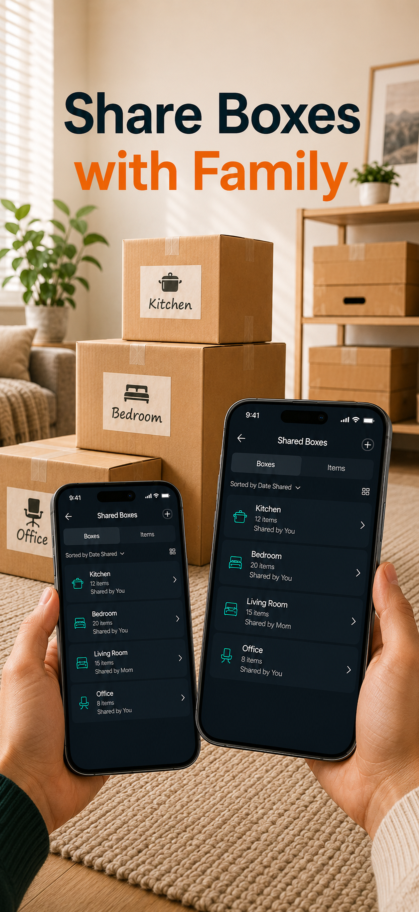
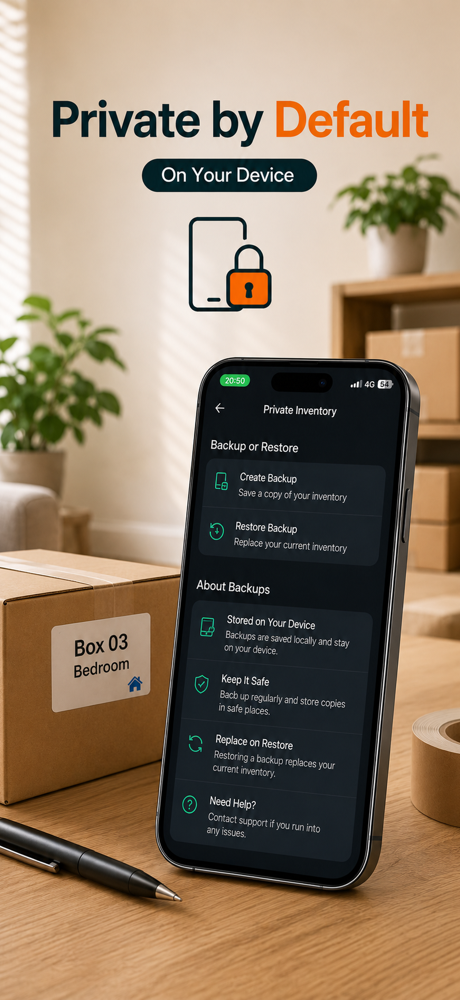

01
The problem
“I know it is in a box. Which one?”
How Moving Boxes Organizer helps
Search for the item and see the box it belongs to. No guessing and no opening boxes one by one.
Moving and storage, made easier
Moving Boxes Organizer keeps a simple record of what is inside your boxes, so you can find an item, share the list, and unpack the things you need first.
For moving boxes, storage bins, garages, closets, and everyday home organization.

The problem, solved
Moving Boxes Organizer gives every box a clear record, so your future self does not have to rely on memory.
The problem
How Moving Boxes Organizer helps
Search for the item and see the box it belongs to. No guessing and no opening boxes one by one.
The problem
How Moving Boxes Organizer helps
Add the actual items, photos, and notes inside each box. You can see what is packed before you move anything.
The problem
How Moving Boxes Organizer helps
Share one inventory with family, so everyone can pack, check, and find things from the same place.
Find it. Search by item, room, or note.
See it. Keep photos and details with the box.
Move on. Unpack what matters first.
See the app





One simple habit
Give it a name and a room.
Use names, photos, and notes.
Search when you need something.
Clear from the start
Your inventory and photos stay on your iPhone by default. Only when you choose to share non-sensitive boxes and photos are they added to Shared Inventory.
No separate Moving Boxes Organizer account is required. Shared Inventory uses your Apple iCloud account only when you invite people.
The free plan supports a small inventory. Pro is an optional one-time App Store purchase with no subscription. Regional pricing is shown in the App Store.
Practical guides
Use a simple method first, then decide whether keeping the records in Moving Boxes Organizer would make the job easier.
FAQ
No. Use it for storage bins, garages, closets, seasonal items, and home organization too.
Your inventory and photos stay on your iPhone by default. Only non-sensitive boxes and photos placed in Shared Inventory are synchronized through your Apple iCloud account with people you invite.
No separate Moving Boxes Organizer account is required. Shared Inventory uses your Apple iCloud account only when you choose to invite people.
No. Pro is an optional one-time App Store purchase with no subscription. Regional pricing is shown in the App Store.
Yes. Shared Inventory lets invited people view and edit the non-sensitive boxes you choose to share. Sensitive boxes stay in your private inventory.
Yes. Mark important items and keep their photos and notes with the box.
Your inventory remains useful for storage and everyday home organization, not just moving day.
Download Moving Boxes Organizer and make your next move easier to live with.